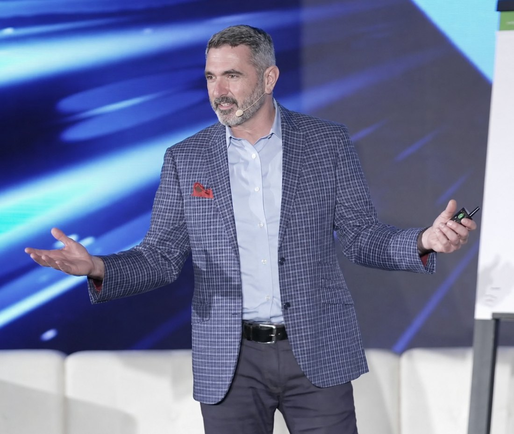

For leaders who need their people building, not waiting
AI is a lever, not a project. The capacity is the hard part. I put the lever in the hands of the people who already own the work — managers, teams, whole departments — and stay until it's moving something real.
What's already been built
Every number below is a room that produced something that outlived the session — and can again.
Hands-on, not slideware. State agencies, counties, nonprofits, and private-sector organizations. They left able to build, judge, and govern — which is the order that actually works.
From no experience to working appsHackathons for local nonprofits. Each team starts with a real problem and ends with a usable app that stays in service after the room empties.
HackathonsFocused people and a real problem. That's all it takes. Two hours is the floor; three days is the ceiling. The work scales to whatever room you can give it.
Build sessionsI built them myself — for briefing, decisions, delivery. There's no case study on paper. Ask me in the room and I'll show you; it's a better conversation than a slide.
My own practice
What you're actually buying
The platform doesn't matter. The model will change. Each engagement below is defined by what's different on the other side of it.
Managers who have read about it become managers who have built with it — and can tell the difference between a demo and a tool.
Workforce capabilitySomething one unit was experimenting with becomes something the organization runs on, with an owner and a way to improve it.
Adoption & operationAn acceptable-use memo becomes a set of decisions leaders can actually apply — and defend to an auditor, a board, or a legislator.
Responsible AI governanceA problem that was waiting on procurement gets solved by the people who have it, in days, with what they already have.
Build sessions & hackathonsRisk stops being a reason to wait and becomes something that's been located, bounded, and assigned.
Executive governanceThe person everyone routes AI questions to stops being a bottleneck, because the questions get answered where the work is.
Leadership rangeThe pattern
Most organizations are running AI as a pilot. A vendor, a sandbox, a memo about acceptable use. The tools get evaluated. Attendance gets tracked.
Six months later the same people are doing the same work the same way, with one more login. Nobody failed. There was just no one on the inside who could build.
The structure
Capacity is when a manager who has never written a line of code ships a working tool by Thursday, and on Friday her team is using it. Capacity is when the governance question — what are we allowed to do with this? — gets answered by people who have actually done it, not people who have read about it.
Change management is still the container. AI is the lever inside it. That's why the same approach works for a state agency's governance framework and for a nonprofit that needs an intake app by the weekend.
The approach
Built for organizations whose people cannot stop delivering while they learn — procurement, compliance, and real deadlines included.
A working session — two hours to three days — where your people build a real tool against a real problem. They finish with something in use, and with the judgment to know what to build next.
Responsible AI capability for leadership. Not policy from a template: the decisions your organization actually has to make — where information can go, where the risk sits, where the opportunity is — structured so they get made.
Leadership range for the AI era. How to direct people who now have a lever they didn't have last year — what to ask for, what to check, when to slow down, when not to.
Pick one
A single way in, scoped on its own. Most engagements start with Build.
Run the sequence
All three as one change effort. What gets built informs what has to be governed, and governance shapes what leaders reinforce — measured as one program, not three trainings.
Who's running the room

Anthony Trunzo. Fifteen-plus years in private-sector leadership, including Fortune 100 organizations. Now working across public service and sales organizations under IQmeetEQ, LLC.
The AI work grew out of the change work, not the other way around. Clients who were trying to get a mandate adopted, a decision made, or a team leading instead of reacting kept running into the same question: what could AI do here, and who inside the building could make it do it? Build Capacity is where that question lives on its own.
Start here
Tell me what your people are trying to get done. If AI moves it, we'll build. If it doesn't, I'll say so.
Schedule a conversation